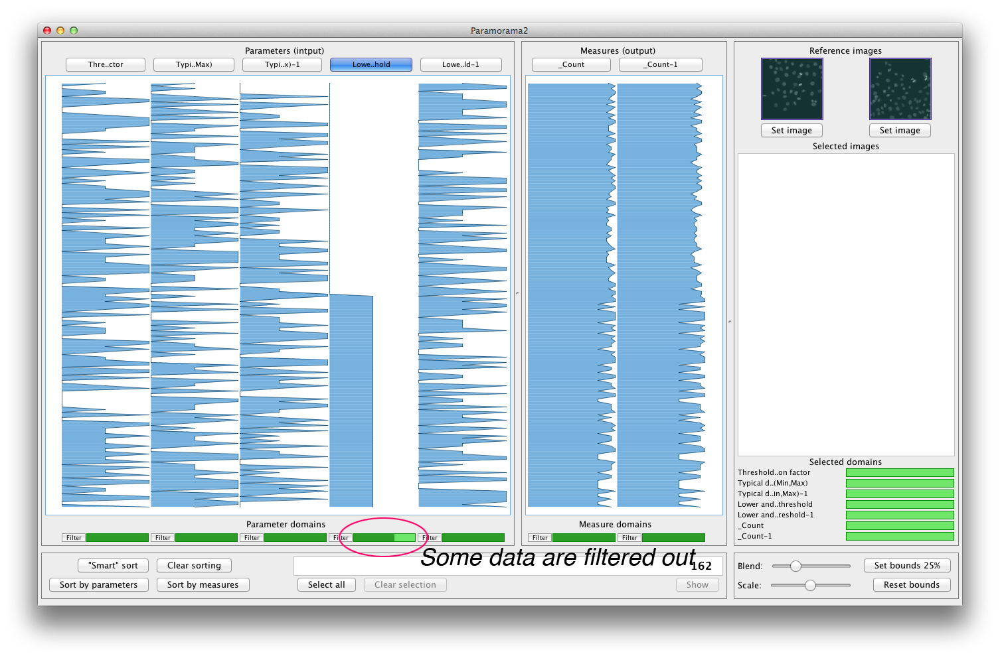
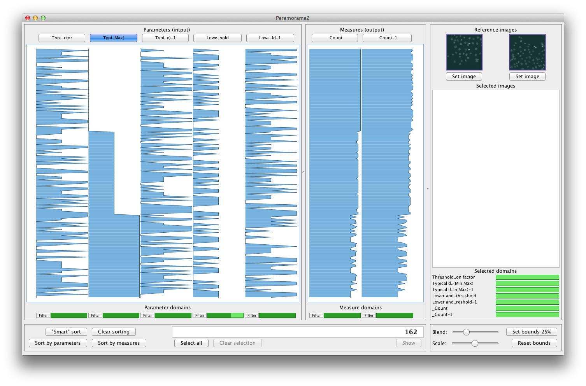
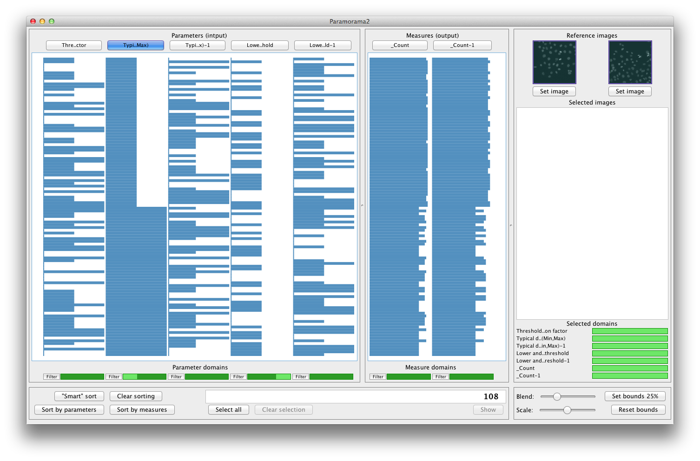
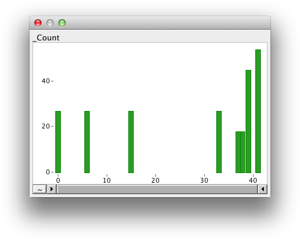
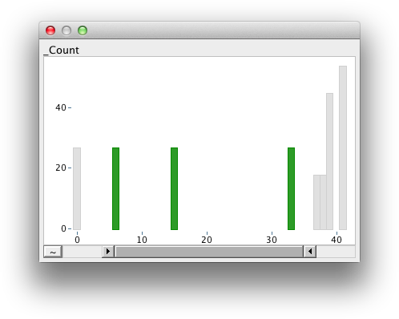

Introduction | Getting started | Sorting | Filtering | Selection | Download | Contact
(See video)
Suppose we decide that the output measures (object counts for the two different input images) are too low when "Lower and upper bounds on threshold" takes its highest value (see previous step). Paramorama 2 lets you hide all those data items, thereby narrowing down your analysis to a smaller data set. To achieve this, click on the button labeled "Filter", below the "Lower and upper bounds on threshold" column. A dialog with a list of the values that "Lower and upper bounds on threshold" can take will be shown. Deselect "0.25" (the highest value). You should see:

All data where "Lower and upper bounds on threshold" assumes the value "0.25" have now been hidden. The visual cue next to the "Filter" button shows you which parts of the domain are shown, and which parts are hidden.
Now, apply smart sorting again by clicking on the button labeled "Smart sort". Notice that the data has now been sorted by another parameter "Typical diameter of objects, in pixel units (Min, Max)" (possibly clipped to "Typi..Max)"). This should give you:

Suppose we decide that the values for the output measures are too high when this parameter takes its lowest value. We can filter out these data items by clicking on "Filter" below this column and deselecting "6" in the dialog. This gives the following:

Before we move on to selection, note that it is also possible to filter data based on the values of output measures. Click on the button labeled "Filter" underneath the column labeled "_Count" or "_Count-1". You can narrow down the region of interest in the distribution plot that is shown (though, to follow the tutorial it is recommended to leave these regions as they are).
The dialog for filtering by measure looks like this:

A distribution plot is shown with the values of the measure mapped to the x-axis, and the number of rows containing each value mapped to the y-axis. Underneath the x-axis is a range slider; moving its ends filters out data. Interacting with the range slider should give you something like this:

All values that have been filtered out are displayed in grey and the tabular visualisation is also updated (just as explained above). Clicking on the button with a tilde ("~"), resets the filtering.
This video shows what filtering looks like in Paramorama2. For full details, please see the description above.
(c) Copyright 2012, A.J. Pretorius. All rights reserved.